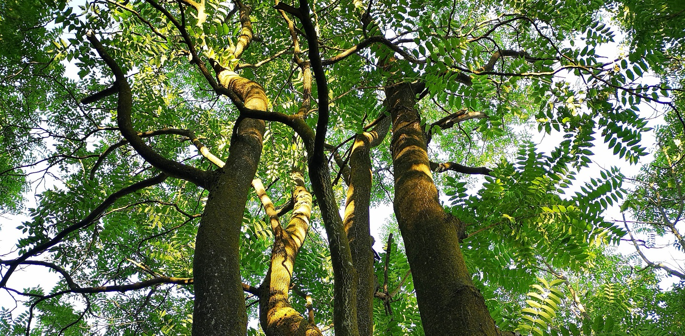
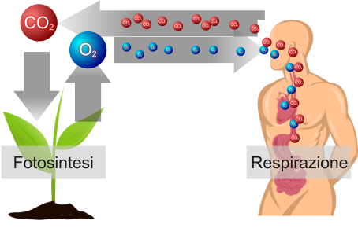
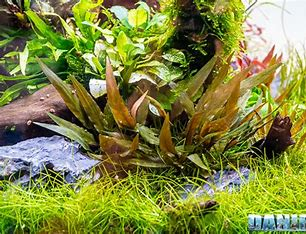

Botanic War

Che cose una pianta neofita
Una pianta neofita è una pianta che fuori dal suo ambiente naturale in modo accidentalmente o deliberatamente. Vengono chiamate anche alieni invasive per la sua rapita colonizzazione e la sua rapita velocità di crescita.

Beneficio della pianta neofita
Il beneficio che dà la pianta neofita è quella che si diminuisce l’anidrite carbonica e aumenta l’ossigeno per poter vivere gli esseri viventi che popolano la terra.

Danno della pianta neofita
Il danno che dà la pianta neofita è quella di creare dei problemi al proprio habitat, cosi da sbalzare l’equilibrio dell’ecosistema naturale.